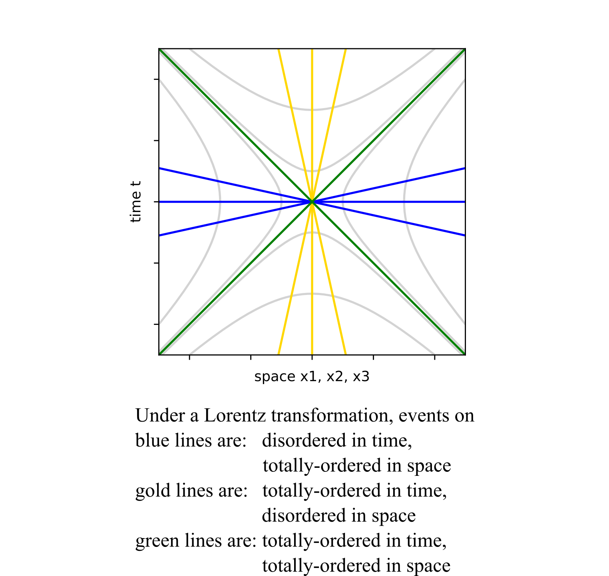

Totally-ordered and Disordered Sets in Space-time under Lorentz Transformations
In Einstein's first paper on special relativity in 1905, he shows how simultaneity is not an invariant under a Lorentz transformation. While there may be an observer that says events A and B happened at the same moment in time, a second observer may say A happened before B while a third reports B happened before A. Is there something that all three observers can agree upon about events A and B, that is invariant under a proper Lorentz transformation? For space-like separated events A and B, so long as the observers have put in the effort to agree about their choices in coordinates and the origin, then the three observers will all agree on the ordering in space of these events in space. If the first observer says A is left of B, then so do observers two and three. If events A and B were in the same location for one of the dimensions, they would remain together. A totally-ordered set means one can say exactly one of three things about any pair of numbers: one is bigger than the other, one is less than the other, or both have the same value. An axis on a graph is a totally-ordered set. Here we are thinking about pairs of space-like events that can be connected by a straight line that runs through the origin. Under a Lorentz transformation, the time for these pairs can switch order depending on the inertial observer chosen. I will call this a disordered in time set of events for space-like separated events under proper Lorentz transformations. The measurements of space will form three totally-ordered sets.
The same exercise can be repeated for all time-like pairs events that fall on a line running through the origin. These pairs of events will be totally-ordered in time: event A did happen before event B and all observers agree to that. If event A was simultaneous to event B, that will remain true for all possible inertial observers. To be time-like, simultaneous, and be on a line through the origin requires that the spatial location of A is identical to B. What is disordered are measurements of space. If event A is located at the same place as event B for one observer, a different observer could put A left of B. The third observer may see event A to the right of B. There are three disordered in space sets of events for time-like separated events in a straight line through the origin under Lorentz transformations.
Pairs of light-like events remain totally-ordered in both time and the three directions of space. Since everything in the light-cone travels at the same speed, there is no way for one event to “catch up” and pass another. Using a proper Lorentz transformation, an event is always stuck in a particular quadrant of a space-time plot. Light-like and space-like events on hyperbolas can use Lorentz transformations to cross one axis (the disordered one), and not the other (the totally-ordered one).
Here is a summary table:
| Relation to origin | Space-time component | Ordering |
|---|---|---|
| space-like | t | disordered |
| " | X1 | totally-ordered |
| " | X2 | totally-ordered |
| " | X2 | totally-ordered |
| time-like | t | totally-ordered |
| " | X1 | disordered |
| " | X2 | disordered |
| " | X3 | disordered |
| light-like | t | totally-ordered |
| " | X1 | totally-ordered |
| " | X2 | totally-ordered |
| " | X3 | totally-ordered |
For this summary to be valid, for all the events in the set there must exist an inertial reference frame where all the events are on the space axis for space-like events, on the time axis for time-like events or on the light cone for light-like events. For any other collection of events, this analysis does not apply. It is relevant to Einstein's initial observation about simultaneous space-like events which fall on the space axis. I find it interesting that events on the light cone retain their relative ordering under Lorentz transformations. For different inertial observers, there will be relativistic Doppler shifting which is well-understood.
Another way to understand these observations is with a space-time diagram:

Axes are totally-ordered sets. A Lorentz transformation does not alter that quality. Instead, it is the other axis that becomes disordered under a Lorentz transformation. It is interesting that the light cone itself remains totally-ordered in both time and space under Lorentz transformations. Values will change, but ordering will not.
Is the requirement of this analysis that for all event there exists straight line so narrow as to make this observation uninteresting? I would argue that every material object's world line to the itself is a straight world line. While I may bike around suburbia, I am at the center of my observable world. I can never ride fast enough to separate from my own eyes. Everyone does agree about which moment of my life came first, second and last. Being North or South, East or West, and up or down would depend on the inertial observer.
The subject of all totally ordered sets in space-time came up while thinking about causality in quantum mechanics. Bell's Future Quantum Mechanics is a page devoted to the new interpretation. See the bottom of the page for other presentations of the idea.